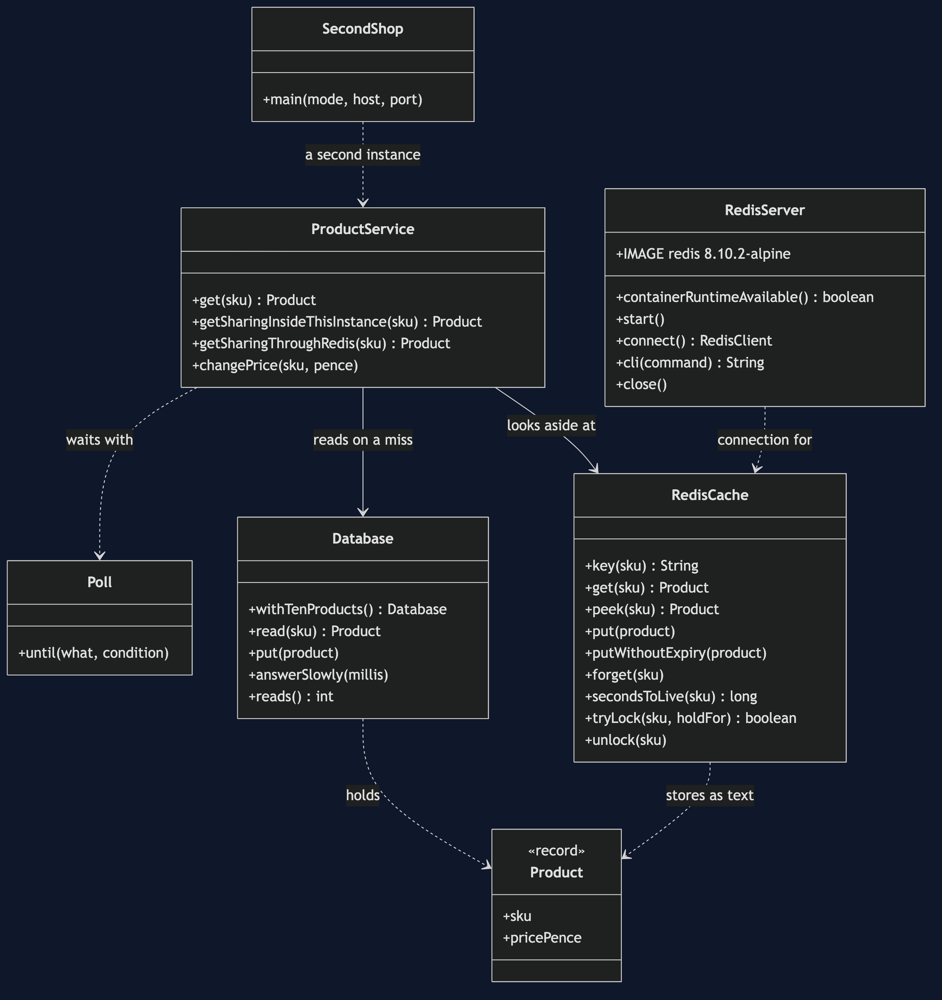
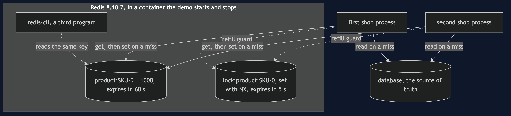
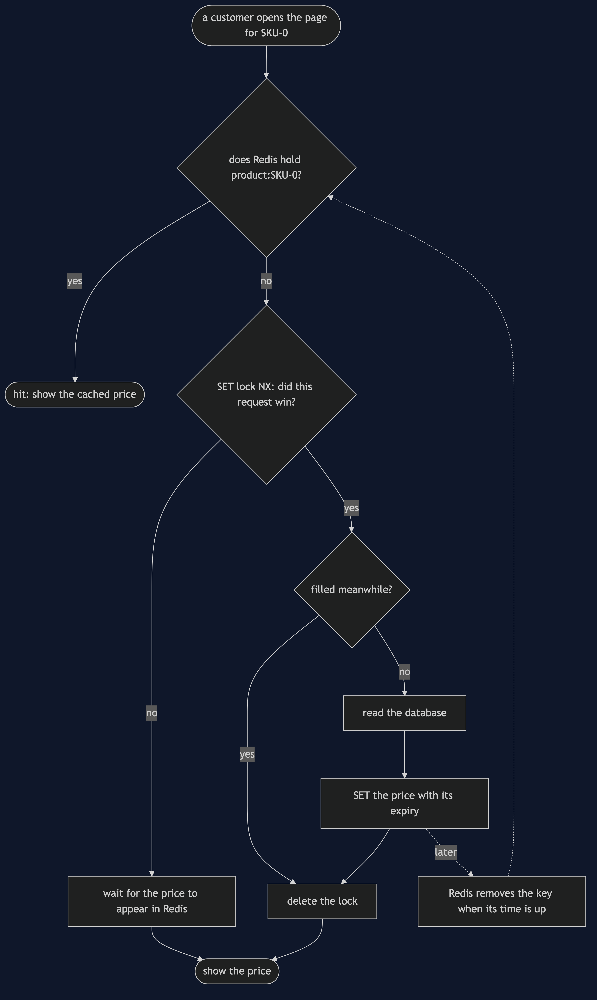
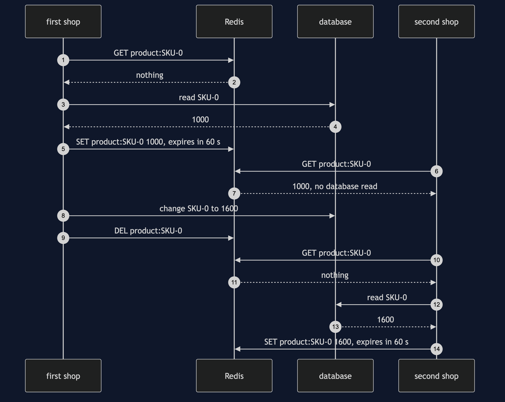
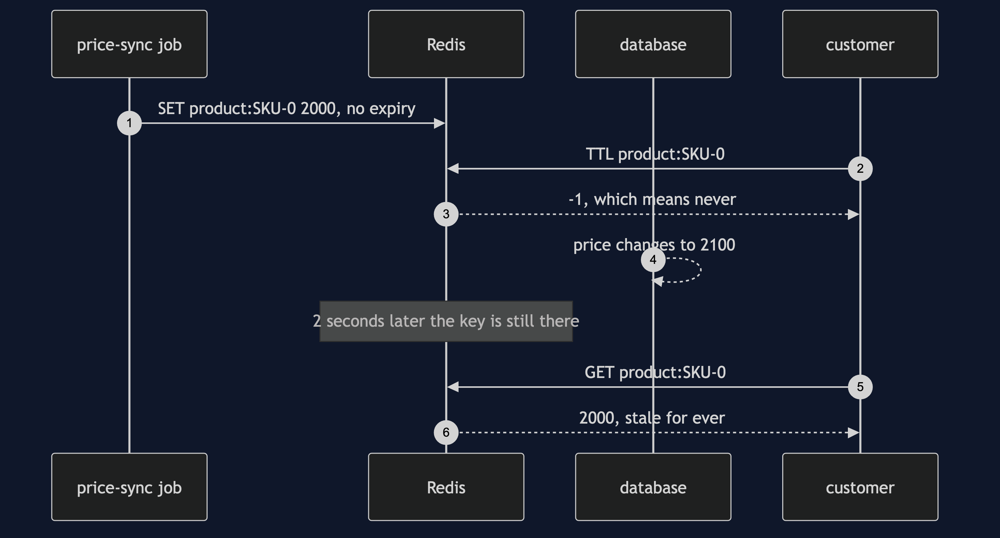
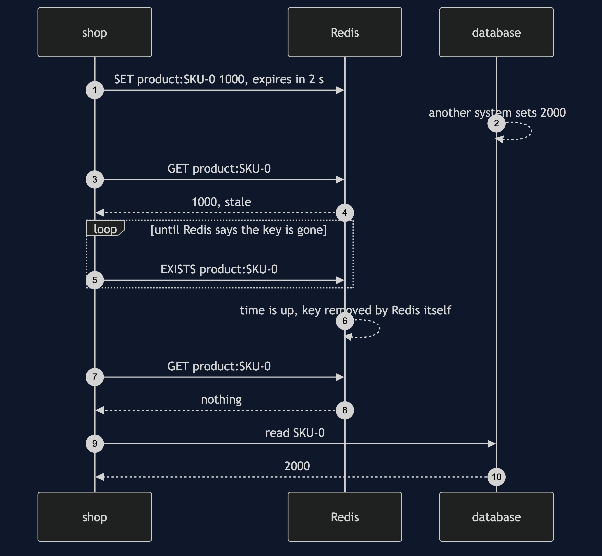
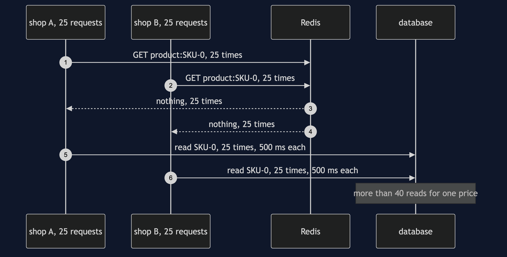
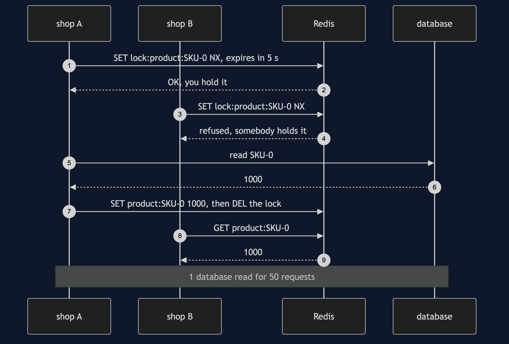

Cache-Aside with Redis Pattern
src/main/java/com/jk/explore/cacheasideredis/
├── RedisCacheAsideDemo.java the six acts
├── ProductService.java the pattern: look in Redis, on a miss read the database and fill Redis
├── RedisCache.java prices in Redis, one key per product, with an expiry; the refill lock
├── RedisServer.java starts and stops a real Redis container; runs redis-cli inside it
├── SecondShop.java a second shop instance, started as a separate Java process
├── Database.java the source of truth; counts every read; can be told to answer slowly
└── Product.java Poll.java the product record; every wait is a question asked until the answer is yesIn Redis, the cache is a separate program. Every shop process sees the same entries, Redis throws an entry away on its own clock — and one ordinary write can quietly switch that clock off.
This project needs a container runtime. Docker Desktop, or anything Docker-compatible, must be running before you start. The demo brings a Redis server up in a container and takes it down again at the end; nothing is installed and nothing is left behind. With no runtime, the demo prints two sentences saying what to do, and stops, rather than a stack trace.
This project is the real-infrastructure version of the plain-Java Cache-Aside project in this course. That project built the cache as a map inside the shop's own program, with a clock the demo moved by hand. This one puts the cache in Redis, an in-memory store running as its own process, and shows three things a map inside one program cannot do: be seen by another process, expire on a real clock nobody controls, and be stampeded by real requests with nothing arranging it.
Run
./gradlew runSix acts, against a real Redis. Every number quoted below, and in every document and slide in this project, comes from this program's own output. Two runs back to back print exactly the same thing.
ONE. No cache.
1000 product page views over 10 popular products: 1000 database reads.
TWO. Look aside, in Redis.
a Redis server is running in a container. the same 1000 views: 10 database reads, 990 cache hits, 10 misses.
Redis now holds 10 keys, each written with a 60 second expiry.
THREE. Another process can see it.
the first shop has viewed all 10 products. a second shop starts as a separate Java process.
with its cache in its own memory, its first 10 views: 10 database reads, 0 cache hits.
with its cache in Redis, its first 10 views: 0 database reads, 10 cache hits.
redis-cli, a separate program in the container, asks for product:SKU-0 and is told: 1000.
the first shop changes SKU-0 to 1600 and deletes the key once. copies left for any process: 0.
FOUR. Real expiry.
SKU-0 is cached for 2 seconds. another system changes the price to 2000. a customer sees 1000.
nobody deletes it. Redis removes the key itself when the time is up. a customer then sees 2000.
a price-sync job writes SKU-0 again with a plain SET. seconds to live, as Redis reports it: -1, which means never.
the price changes to 2100. 2 seconds later a customer still sees 2000. the entry will never expire.
an expiry only limits staleness while every write keeps it. one plain write turned it off.
FIVE. A real stampede.
50 requests arrive together, across 2 shop instances, for SKU-0 just after its entry expired. a database read takes 500 milliseconds.
every request checks Redis and misses. database reads: more than 40, for one price.
requests share a read inside each instance: 2 database reads, one per instance.
requests share a lock kept in Redis: 1 database read. the lock expires by itself after 5 seconds if its holder dies.
SIX. The bill.
Redis is emptied, as a restart with nothing saved leaves it. the first 10 views: 10 database reads.
Redis out of the box: maxmemory 0, which means no limit, and maxmemory-policy noeviction.
a cache must be given a size and told what to throw away, or it grows until the machine runs out.
and a price now crosses the network as text: Redis holds SKU-0 as the string 1000.
and Redis is one more system to run, secure and watch: this demo needed 1 container for 2 shop processes.Prices are in pence, as in the twin: 1000 is £10.00.
The fifth act's first figure is printed as a description, "more than 40", and not as a count. Fifty real threads race to a real server, and exactly how many of them miss before the first one refills the entry is up to the thread scheduler; on the machine this was written on it is all 50. The other two figures in that act are exact, because the code guarantees them.
The first run downloads the Redis image, about 120 MB once unpacked, and takes longer. After that a run takes about ten seconds: two of them are the fourth act genuinely waiting for Redis's clock, and the rest is the container starting and the second shop's Java process starting twice.
Test
./gradlew test3 test classes, 16 test methods. PlainPartsTest needs nothing installed. RealRedisTest starts one Redis for the whole class and asks it directly: a miss fills and later views hit, a second connection and a second Java process see what the first wrote, a deleted entry is re-read fresh, Redis removes an expired entry on its own, a plain SET throws the expiry away, only one caller gets the lock and a dead holder's lock expires, a stampede reads the database many times and the Redis lock brings it to one, and out of the box Redis has no memory limit. DemoRunsTest runs the demo and asserts every figure the documents quote.
There is no Thread.sleep anywhere under src/test. Every wait is a poll on something Redis can actually be asked about — whether a key still exists, whether a lock can be taken — with a limit that fails the test rather than hanging it. The stampede's count is asserted as a range, more than 40 and at most 50; the lock's single read and the per-instance two are asserted exactly. The tests that need Redis are skipped when no container runtime is there; the rest still run.
What the simulation got right, and what it left out
This is the reason this project exists, so it comes before anything else.
What the plain-Java Cache-Aside project got right. All of the shape. The shop asks the cache first; on a miss it asks the database itself and remembers the answer; the cache never talks to the database. A write goes to the database and then throws the cached copy away. An expiry does not make a cache right, only wrong for a bounded time. A popular entry that expires under load sends a crowd to the database at once. And an emptied cache hands the whole load back to the database until it warms up. Every one of those holds on Redis, and this project's first, second and sixth acts reproduce them with the same figures: 1000 reads without a cache; 10 reads, 990 hits and 10 misses with one; 10 reads again after the cache is emptied.
What it left out, first: the cache lived inside one program. The simulation's cache was a map in the shop's own memory. Run two copies of the shop — which is what every real shop does — and each would have its own map, fill it separately, and disagree about prices for as long as their entries lived. Here the third act starts a second shop as a genuinely separate Java process. With its cache in its own memory, its first 10 views cost 10 database reads, even though the first shop had just read the same 10 products. With its cache in Redis, the same 10 views cost 0 reads and are 10 hits. And one delete, by one shop, removes the entry for every process at once: 0 copies left.
Second: the clock was the demo's. The simulation's expiry was a number compared against a counter the demo advanced by 59 and then by 2 seconds. Nothing expired unless the demo said so. Redis keeps its own clock and removes an entry when its time is up, with nobody asking — Redis calls an entry's remaining time its TTL, its time to live. The fourth act gives an entry 2 seconds, changes the price underneath it, and then simply waits, asking Redis every few milliseconds whether the key still exists, until Redis itself has removed it.
Third, and the headline find: a plain write erases the expiry. In the simulation, the expiry was part of the entry and every put set it. Redis treats a write as a whole new value. A SET that does not mention an expiry does not keep the old one; it throws it away, and the entry now lives for ever. The fourth act has a price-sync job write the price back with a plain SET — the sort of line anybody might add — and Redis then reports the entry's time to live as -1, which means never. The database changes the price to 2100; 2 seconds later, the time the entry was meant to last, a customer still sees 2000, and will until somebody deletes the key by hand. The whole promise of act four in the twin, "wrong for a bounded time", was held up by one argument on every write.
Fourth: the stampede happens by itself. The simulation could only show a stampede by holding every database read until all fifty requests had missed the cache — the demo arranged the collision. Here nothing is held. Fifty real threads, across 2 shop instances with their own connections, ask a real Redis for an entry that has just gone, and the database's 500 milliseconds is time enough for more than 40 of them to miss and go to the database, for one price. The simulation's fix, sharing one read among the requests waiting inside one program, is still worth having, but with two instances it gives 2 reads, not 1, because neither instance can see the other's waiting requests. Only a lock kept in Redis, which every instance can see, brings it to 1 database read. That lock needs an expiry of its own, 5 seconds here, or a shop that dies holding it blocks every other shop for good.
What the simulation had that Redis does not. The simulation's cache held Product objects. Redis holds text: the price travels as the string 1000 and is turned back into a number on the way out, so every reader and writer has to agree on that format. And the simulation's cache could not fill up the machine, because it only ever held ten entries; Redis out of the box has maxmemory 0, meaning no limit, and the policy noeviction, meaning it never throws anything away to make room. A real cache has to be given a size and told what to discard.
Technologies and versions
| What | Version | Why it is here |
|---|---|---|
| Java | 21 | The repository standard, via the Gradle toolchain block |
| Gradle | 9.2.1 | The wrapper in this directory; no separate install needed |
| Redis | 8.10.2 | The cache, as the official redis:8.10.2-alpine container image; the newest release, on Alpine Linux to keep the image small |
| Jedis | 8.0.1 | redis.clients:jedis, the newest release; a Redis client whose method names are the Redis command names |
| Testcontainers | 2.0.5 | org.testcontainers:testcontainers; starts and stops the Redis container from inside the demo on a free random port. The 2.x line has no Redis module, so the plain container type is used |
| slf4j-simple | 2.0.17 | Logging for the two libraries above, turned off so the demo's own output is the only output |
| JUnit 5 | 5.10.2 | Test runner |
| A container runtime | Docker 24 or later, or compatible | Runs Redis. Must be running before you start |
Nothing is held back: every version is the newest generally available release. See docs/dependencies.md and docs/prerequisites.md.
Learning Material
| Document | What it covers |
|---|---|
docs/problem-statement.md | The twin's version, and what is new |
docs/cache-aside-with-redis-pattern-explained.md | Redis's words in plain language, and six acts |
docs/class-diagram.md | The types |
docs/architecture-diagram.md | Two shop processes, one Redis, one database |
docs/data-flow-diagram.md | What one price read does |
docs/sequence-diagram.md | Written for a listener with the screen off |
docs/uml-diagram.md | Four sequences |
docs/animation.html | The six acts in a browser |
docs/prerequisites.md | What you need installed, and what you need to know |
docs/session.md | A one-hour taught session |
docs/dependencies.md | What Redis and Testcontainers are, what they cost, and that skipping this project loses none of the pattern |
docs/spec.md | The generated specification |
docs/youtube.md | Title, description and chapters |
The pattern in one picture

Where each piece sits

How one request moves

Who calls whom, in order

All four sequences




Video
Built from video/scenes.py by video/build_video.sh. The rendered file is not committed; see the repository README for why.
Where you have already met this
Almost every web shop that has more than one server: product pages, prices, stock levels and sessions read from Redis or Memcached in front of a database. Spring's @Cacheable backed by Redis is this pattern with the lookup and the refill written for you, and it makes the same choices this project makes by hand — which key, how long it lives, and what happens on a write.
When this is too much
If the shop runs as one process, a map in its own memory, like the twin's, is faster and costs nothing to run. If the data changes on every read, or must be exact, a cache is overhead or a bug. Redis earns its keep when several processes need to agree on the same cached answers, or when the cache has to outlive a restart of the shop.
Where this sits
This project pairs with the plain-Java Cache-Aside project in this course, and is its real-infrastructure version in the micro-services-design-patterns category. Everything it teaches is explained in its own files, so it can be read on its own.